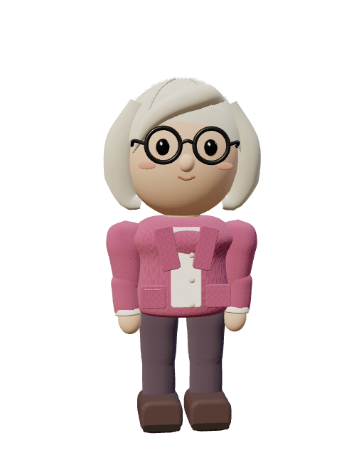

첫 방문
집에서 시작해요
장면 설명
지금 있는 곳
아래 행동으로 같은 생활을 이어갈 수 있어요.
우리 동네
잠깐만요.
WASD · 방향키로 걷기 E 대화 · Esc 닫기
내 발걸음으로 동네를 둘러보세요.
기록을 불러오는 중…



오늘의 플레이 메모
혼자 눌러 보며 남기는 메모예요. 실제 참여자 조사와는 별도로 보관해요.
개발 체험 안내
기기 한 대의 가상 기록으로 연결한 생활 시제품입니다. 임시 3D 모형이며 완성된 캐릭터 미술이나 실제 휴대폰 성능을 뜻하지 않습니다. 자동 검사는 플레이어의 재미·학습 효과 검증과 구분합니다.